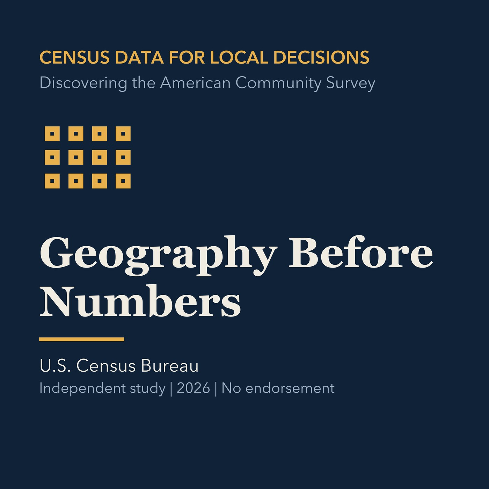

EPISODE 03
Geography Before Numbers
Selects place, tract, block group, district, and custom geographies deliberately.

- Stable GUID
e45ffa2d-207c-5ec2-a89f-d32d7a5f0102- Release
- census-academy-v2026.2
- SHA-256
471d6c4f14c0bce295f329e05295b82333ddd57baacd38d8444af7b61e9800b6